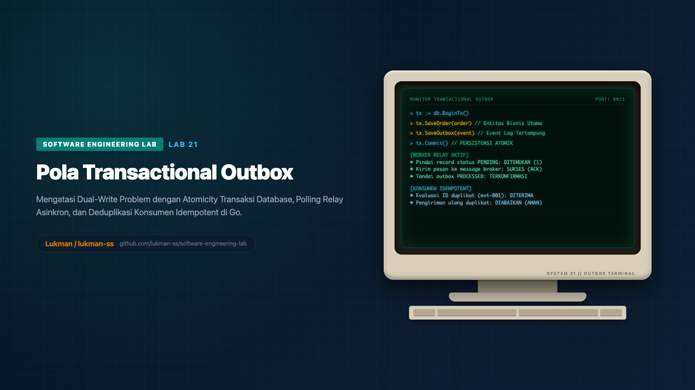

Dalam rekayasa sistem terdistribusi modern berbasis arsitektur mikrolayanan, kebutuhan koordinasi antara status persistensi domain lokal dan saluran komunikasi asinkron merupakan pola operasional fundamental. Setiap kali pengguna menyelesaikan transaksi bisnis penting—misalnya membuat pesanan belanja, melakukan pembayaran faktur, atau memperbarui informasi profil akun—aplikasi backend dituntut untuk menyelesaikan dua hal sekaligus: menyimpan data status baru ke dalam basis data utama serta menerbitkan pesan notifikasi (seperti OrderCreated atau InvoicePaid) ke antrean pesan terdistribusi seperti Apache Kafka, RabbitMQ, atau Google Cloud Pub/Sub.
Tuntutan ini sepintas tampak sepele dan kerap diimplementasikan secara terburu-buru melalui pemanggilan prosedur imperatif berurutan di dalam kode program aplikasi. Pengembang sering kali mengeksekusi commit database relasional terlebih dahulu, lalu memanggil fungsi penerbitan event jaringan langsung ke message broker pada baris kode berikutnya. Namun, di balik alur sederhana ini tersembunyi jebakan kegagalan jaringan paling laten dalam komputasi terdistribusi yang dikenal dengan istilah dual-write problem.
Software Engineering Lab 21 membedah anatomi kegagalan ini secara terukur dan menghadirkan solusi arsitektural baku: Pola Transactional Outbox. Dengan memanfaatkan garansi transaksi ACID (Atomicity, Consistency, Isolation, Durability) bawaan mesin basis data relasional, pola ini mengikat penulisan rekaman bisnis domain dan rekaman event log ke dalam satu batas transaksi yang sama. Pendekatan ini menghilangkan potensi kehilangan data permanen akibat kegagalan broker tanpa membutuhkan protokol transaksi terdistribusi dua-fase (Two-Phase Commit / 2PC) yang lambat dan rapuh.
Masalah dual-write muncul saat sebuah alur kerja bisnis membutuhkan penulisan ke dua sistem penyimpanan data independen yang tidak saling berbagi write-ahead log (WAL) atau manajer transaksi terpadu. Transaksi database relasional dirancang secara ketat untuk menjamin konsistensi pada internal storage engine miliknya sendiri. Perintah BEGIN ... COMMIT SQL tidak memiliki otoritas maupun kapabilitas untuk melakukan operasi ROLLBACK terhadap socket TCP eksternal, antrean RabbitMQ, partisi Kafka, atau layanan webhook HTTP pihak ketiga.
Pertimbangkan layanan pembuatan pesanan OrderService. Layanan ini menyimpan pesanan pelanggan senilai Rp 500.000 ke tabel orders. Segera setelah perintah commit SQL berhasil dijalankan, server aplikasi mencoba menghubungi broker Kafka untuk menerbitkan event OrderCreated. Saat request jaringan dikirimkan, switch jaringan mengalami packet drop sesaat, broker kehabisan buffer memori, atau proses aplikasi crash tiba-tiba. Dampaknya fatal:
OrderCreated lenyap tanpa jejak dan tidak pernah sampai ke antrean broker.Sebagai upaya alternatif yang keliru, sebagian tim mencoba membalik urutan eksekusi: mengirimkan event ke message broker terlebih dahulu, baru kemudian mengeksekusi commit SQL ke basis data. Skenario ini menghasilkan anomali yang lebih destruktif. Ketika pesan OrderCreated berhasil diterima oleh broker, transaksi database lokal justru mengalami kegagalan akibat konflik unique constraint, dead-lock transaksi relasional, atau koneksi database terputus. Database melakukan ROLLBACK penuh. Dampaknya:
Secara teori akademis, Two-Phase Commit (2PC) dapat mengkoordinasikan transaksi atomik multi-node. Namun, dalam ekosistem mikroservis modern, 2PC dihindari karena alasan praktis rekayasa piranti lunak:
Solusi pragmatis dan tangguh untuk mengatasi dual-write problem adalah menyatukan dua penulisan independen tersebut ke dalam satu domain transaksi ACID lokal. Kita menolak melakukan penulisan jaringan eksternal di dalam siklus transaksi bisnis. Sebagai gantinya, kita membuat tabel khusus bernama outbox_events di dalam basis data yang sama dengan tabel entitas domain kita.
Model mental arsitektur ini dirangkum dalam bagan interaksi sistem berikut:
+-----------------------------------------------------------------------------------+
| BATAS SERVICE PEMESANAN |
| |
| [ Klien HTTP ] |
| | |
| v |
| [ OrderService ] |
| | |
| | === 1. Transaksi Tunggal (ACID Transaction Boundary) ================== |
| | | |
| +---> INSERT INTO orders (id, customer_id, amount, status) | |
| | | |
| +---> INSERT INTO outbox_events (id, event_type, payload, status) | |
| | | |
| | === 2. COMMIT TRANSACTION (Atomic: Keduanya Sukses atau Batal) ======= | |
| |
+-----------------------------------------------------------------------------------+
|
| Persistensi Tabel di Database
v
+-------------------------------------------+
| BASIS DATA UTAMA (Postgres) |
| +------------------+------------------+ |
| | tabel orders | tabel outbox | |
| +------------------+------------------+ |
+-------------------------------------------+
^
| 3. Polling Berkala (SELECT WHERE status='PENDING')
+----------------------------------|------------------------------------------------+
| WORKER RELAY ASINKRON |
| |
| [ Outbox Relay Worker ] --------+ |
| | |
| | 4. Publish Event (At-Least-Once, Aman Retry) |
| v |
| [ Message Broker (Kafka / RabbitMQ) ] |
| | |
| | 5. Konsumsi Pesan Jaringan |
| v |
| [ Idempotent Downstream Consumer ] |
| | |
| +---> Cek tabel/set processed_event_ids |
| +---> Jika ada: Abaikan (Duplicate ACK) |
| +---> Jika baru: Simpan ID + Jalankan Logika Bisnis (State Updated) |
+-----------------------------------------------------------------------------------+
Tiga komponen penyusun pola ini bekerja secara harmonis:
PENDING, menerbitkannya ke broker, dan menandai status rekaman menjadi PROCESSED setelah broker memberikan acknowledgment sukses.Seluruh mekanisme di atas telah diimplementasikan secara konkret dan terverifikasi pada kode sumber Lab 21 di direktori labs/21-outbox-pattern/internal/outbox/. Mari kita bedah setiap komponen krusialnya.
Struktur data outbox menampung identitas unik pesan, jenis event, representasi payload string (format serialisasi JSON), status pemrosesan, dan stempel waktu pembuatan.
// File: internal/outbox/model.go
package outbox
import "time"
type OrderStatus string
type MessageStatus string
const (
OrderStatusCreated OrderStatus = "CREATED"
OrderStatusCancelled OrderStatus = "CANCELLED"
MessageStatusPending MessageStatus = "PENDING"
MessageStatusProcessed MessageStatus = "PROCESSED"
)
type Order struct {
ID string `json:"id"`
CustomerID string `json:"customer_id"`
Amount float64 `json:"amount"`
Status OrderStatus `json:"status"`
}
type OutboxMessage struct {
ID string `json:"id"`
EventType string `json:"event_type"`
Payload string `json:"payload"`
Status MessageStatus `json:"status"`
CreatedAt time.Time `json:"created_at"`
}Untuk menguji atomicity secara deterministik tanpa dependensi kontainer eksternal yang lambat, db.go memodelkan mesin database transaksional dengan antarmuka BeginTx, Commit, dan Rollback. Staging data menampung mutasi pesanan dan rekaman outbox secara terisolasi sebelum diaplikasikan ke storage utama saat commit.
// File: internal/outbox/db.go
func (tx *Tx) SaveOrder(o Order) error {
if tx.rolledBack { return errors.New("transaction rolled back") }
if tx.committed { return errors.New("transaction already committed") }
tx.stagedOrders[o.ID] = o
return nil
}
func (tx *Tx) SaveOutbox(msg OutboxMessage) error {
if tx.rolledBack { return errors.New("transaction rolled back") }
if tx.committed { return errors.New("transaction already committed") }
tx.stagedOutbox[msg.ID] = msg
return nil
}
func (tx *Tx) Commit() error {
tx.db.mu.Lock()
defer tx.db.mu.Unlock()
if tx.rolledBack { return errors.New("cannot commit rolled back tx") }
if tx.committed { return errors.New("already committed") }
for k, v := range tx.stagedOrders { tx.db.orders[k] = v }
for k, v := range tx.stagedOutbox { tx.db.outbox[k] = v }
tx.committed = true
return nil
}File service.go menyandingkan metode naive dual-write yang berbahaya dengan implementasi Transactional Outbox yang aman. Perhatikan bagaimana CreateOrderWithOutbox menyatukan penyimpanan domain dan outbox ke dalam transaksi tunggal.
// File: internal/outbox/service.go
func (s *OrderService) CreateOrderWithOutbox(orderID string, customerID string, amount float64) error {
tx := s.db.BeginTx()
order := Order{
ID: orderID,
CustomerID: customerID,
Amount: amount,
Status: OrderStatusCreated,
}
payload, err := json.Marshal(order)
if err != nil {
_ = tx.Rollback()
return fmt.Errorf("failed to marshal order payload: %w", err)
}
msg := OutboxMessage{
ID: fmt.Sprintf("evt-%s", orderID),
EventType: "OrderCreated",
Payload: string(payload),
Status: MessageStatusPending,
CreatedAt: time.Now(),
}
if err := tx.SaveOrder(order); err != nil {
_ = tx.Rollback()
return err
}
if err := tx.SaveOutbox(msg); err != nil {
_ = tx.Rollback()
return err
}
return tx.Commit()
}Sebaliknya, pada implementasi naive di bawah ini, proses commit database dieksekusi terlebih dahulu. Ketika pemanggilan jaringan broker.Publish gagal, fungsi mengembalikan error, tetapi rekaman pesanan di database tidak dapat ditarik kembali.
// Pola Naive Berbahaya: Commit Database terpisah dari Publish Broker
func (s *OrderService) CreateOrderDualWriteNaive(broker Broker, orderID string, customerID string, amount float64) error {
tx := s.db.BeginTx()
order := Order{ID: orderID, CustomerID: customerID, Amount: amount, Status: OrderStatusCreated}
if err := tx.SaveOrder(order); err != nil {
_ = tx.Rollback()
return err
}
if err := tx.Commit(); err != nil {
return err
}
// Penulisan ke broker berada di luar transaksi database!
msg := OutboxMessage{
ID: fmt.Sprintf("evt-%s", orderID),
EventType: "OrderCreated",
Payload: fmt.Sprintf(`{"ID":"%s","Amount":%f}`, orderID, amount),
Status: MessageStatusPending,
CreatedAt: time.Now(),
}
if err := broker.Publish(msg); err != nil {
return fmt.Errorf("failed to publish to broker after DB commit: %w", err)
}
return nil
}Pekerja relay memindai pesan outbox berstatus PENDING secara berkala. Jika broker berhasil menerima pesan, status rekaman di database diperbarui menjadi PROCESSED. Jika terjadi gangguan jaringan, status tetap PENDING sehingga pesan otomatis dicoba ulang (retry) pada siklus polling berikutnya tanpa risiko kehilangan data.
// File: internal/outbox/relay.go
func (r *Relay) PollAndDispatch() int {
pending := r.db.GetPendingOutbox()
dispatched := 0
for _, msg := range pending {
err := r.broker.Publish(msg)
if err == nil {
err = r.db.MarkOutboxProcessed(msg.ID)
if err != nil {
log.Printf("failed to mark outbox msg %s as processed: %v\n", msg.ID, err)
} else {
dispatched++
}
} else {
// Broker gagal: Biarkan pesan tetap PENDING untuk di-retry
log.Printf("failed to publish outbox msg %s: %v\n", msg.ID, err)
}
}
return dispatched
}Karena arsitektur ini menjamin pengiriman at-least-once, pengiriman ulang dapat menghasilkan duplikat jika relay sempat crash sebelum sempat memperbarui status database. Konsumen diwajibkan melacak ID pesan yang telah diproses untuk menjamin keamanan operasi downstream.
// File: internal/outbox/consumer.go
func (c *Consumer) Handle(msg OutboxMessage) bool {
c.mu.Lock()
defer c.mu.Unlock()
if c.processedIDs[msg.ID] {
// Event duplikat terdeteksi: abaikan secara aman
return false
}
c.processedIDs[msg.ID] = true
c.received = append(c.received, msg)
return true
}Kebenaran implementasi ini dibuktikan melalui 8 skenario pengujian komprehensif pada berkas tests/outbox_test.go. Seluruh rangkaian pengujian dijalankan dengan Go race detector aktif untuk membuktikan stabilitas multithreading di bawah kondisi konkurensi tinggi.
$ go test -v -race ./... === RUN TestTransactionalOutbox_HappyPath --- PASS: TestTransactionalOutbox_HappyPath (0.05s) === RUN TestTransactionalOutbox_Rollback --- PASS: TestTransactionalOutbox_Rollback (0.03s) === RUN TestTransactionalOutbox_Idempotency_DuplicateDelivery --- PASS: TestTransactionalOutbox_Idempotency_DuplicateDelivery (0.00s) === RUN TestDualWriteProblem_Failure --- PASS: TestDualWriteProblem_Failure (0.00s) === RUN TestTransactionalOutbox_ConcurrentWrites --- PASS: TestTransactionalOutbox_ConcurrentWrites (0.01s) === RUN TestTransactionalOutbox_PurgeProcessed --- PASS: TestTransactionalOutbox_PurgeProcessed (0.00s) === RUN TestTransactionalOutbox_RelayRetryAfterBrokerFailure 2026/10/13 15:59:12 failed to publish outbox msg evt-o-retry: broker unavailable --- PASS: TestTransactionalOutbox_RelayRetryAfterBrokerFailure (0.08s) === RUN TestTransactionalOutbox_ConcurrentConsumers --- PASS: TestTransactionalOutbox_ConcurrentConsumers (0.00s) PASS ok github.com/software-engineering-lab/labs/21-outbox-pattern/tests 0.17s
Analisis angka empiris dari hasil pengujian di atas membuktikan:
TestDualWriteProblem_Failure): Saat broker dibuat offline via broker.SetFailNext(true), fungsi dual-write naive menghasilkan inkonsistensi fatal: db.GetOrder("o-fail") != nil (pesanan tersimpan) tetapi broker.GetMessages() == 0 (pesan tidak pernah sampai ke antrean).TestTransactionalOutbox_Rollback): Ketika transaksi dibatalkan sebelum commit, baik rekaman entitas pada tabel orders maupun rekaman event pada tabel outbox terhapus secara deterministik (jumlah keduanya 0).TestTransactionalOutbox_ConcurrentWrites): 10 goroutine worker yang mengeksekusi 10 pesanan secara paralel (total 100 pesanan konkuren) berhasil mempublikasikan tepat 100 pesan ke broker dengan 0 pesan pending tersisa dan 0 data race terdeteksi oleh compiler.TestTransactionalOutbox_RelayRetryAfterBrokerFailure): Relay mendeteksi kegagalan broker pada poll pertama, mempertahankan status PENDING, dan berhasil melakukan retry serta dispatch penuh pada siklus poll berikutnya.TestTransactionalOutbox_Idempotency_DuplicateDelivery): Pengiriman event duplikat dengan ID yang sama secara konsisten ditolak oleh konsumen (mengembalikan nilai accepted=false) dan total rekaman yang diproses tetap bernilai 1.Tabel berikut membandingkan karakteristik teknis antara pola penulisan naif langsung (dual-write) dengan arsitektur Transactional Outbox yang diimplementasikan pada Lab 21.
| Dimensi Arsitektur | Sebelum: Naive Dual-Write | Sesudah: Transactional Outbox |
|---|---|---|
| Batas Atomicity | Terpisah di dua sistem jaringan independen (Database vs Broker). | Tunggal di dalam batas transaksi ACID storage engine database. |
| Ketahanan Terhadap Crash | Rentan terhadap packet loss, timeout, atau crash aplikasi setelah commit. | Tahan crash; pesan tersimpan aman di tabel outbox dan dapat diulang. |
| Jaminan Pengiriman | Best-effort (berisiko event hilang permanen tanpa jejak). | At-least-once delivery (seluruh event terjamin terkirim). |
| Kebutuhan Konsumen | Bisa non-idempotent tetapi sistem rentan kehilangan data. | Wajib idempotent melalui pelacakan ID pesan unik. |
| Kompleksitas Operasional | Sederhana di awal tetapi mahal saat investigasi data hilang manual. | Membutuhkan worker relay serta strategi pembersihan (housekeeping) tabel. |
| Latensi Pengiriman | Langsung (inklusif di dalam alur request klien). | Asinkron (dipengaruhi oleh interval polling worker relay). |
Pola Transactional Outbox bukan solusi bebas biaya. Penerapannya membawa sejumlah trade-off arsitektural yang wajib diantisipasi oleh tim rekayasa perangkat lunak:
SELECT ... WHERE status='PENDING' secara berulang. Kueri ini membebani CPU database dan IOPS disk. Di lingkungan produksi berskala masif, teknik Change Data Capture (CDC) seperti Debezium yang membaca Write-Ahead Log (WAL) Postgres secara native lebih disukai dibanding polling periodik.Batasan Implementasi Lab 21: Lab ini menggunakan database in-memory transaksional berbasis map di Go untuk menguji atomicity, mekanisme rollback, dan deduplikasi secara murni tanpa dependensi eksternal. Lab ini secara spesifik memodelkan pendekatan Polling Publisher dan belum mengikutsertakan Transaction Log Tailing / CDC level engine (Debezium/Kafka Connect), skema partisi sharding berbasis aggregate ID, serta dead-letter queue untuk payload rusak non-retryable.
Pola Transactional Outbox sangat direkomendasikan pada situasi rekayasa berikut:
Sebaliknya, hindari penggunaan Transactional Outbox jika:
Seluruh kode sumber, skenario pengujian, dan demonstrasi interaktif dapat diakses secara publik pada repositori proyek resmi:
f3822e554e0e1a4c580ee421990bd279b59c9969